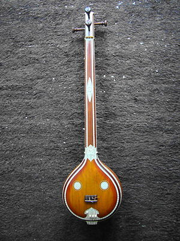
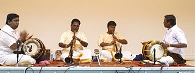

The nadaswaram, nagaswaram, nadhaswaram or nathaswaram is a double reed wind
instrument. It is a traditional classical instrument originated in Tamil Nadu
and also used in Andhra Pradesh, Karnataka, and Kerala (India).
This instrument is "among the world's loudest non-brass acoustic instruments".
It is a wind instrument similar to the North Indian shehnai but much longer,
with a hardwood body and a large flaring bell made of wood or metal.
In Tamil culture, the nadaswaram is considered to be very auspicious, and it is
a key musical instrument played in almost all Hindu weddings and temples of the
South Indian tradition. It is part of the family of instruments known as mangala
vadya . The instrument is usually played in pairs, and accompanied by a pair of
drums called thavil;it can also be accompanied with a drone from a similar oboe
called the ottu.
History:

Nadaswaram is referred in many ancient Tamil texts. Silappatikaram refers to an
instrument called "vangiyam". The structure of this instrument matches that of
Nadaswaram. Since there are seven holes played with seven fingers this was also
called as "Ezhil". This instrument, too, is widely played in Tamil Nadu and
popular among the Tamil Diaspora.
Construction:
The nadaswaram contains three parts namely, kuzhal, thimiru, and anasu.
It is a double reed instrument with a conical bore which gradually enlarges
toward the lower end. The top portion has a metal staple (mel anaichu) into
which is inserted a small metallic cylinder (kendai) which carries the
mouthpiece made of reed. Besides spare reeds, a small ivory or horn needle is
attached to the instrument, and used to clear the reed of saliva and other
debris and allows free passage of air. A metallic bell (keezh anaichu) forms the
bottom end of the instrument.

Traditionally the body of the nadaswaram is made out of a tree called aacha
although nowadays bamboo, sandalwood, copper, brass, ebony and ivory are also
used. For wooden instruments, old wood is considered the best, and sometimes
wood salvaged from demolished old houses is used.
The nadaswaram has seven finger-holes, and five additional holes drilled at the
bottom which can be stopped with wax to modify the tone. The nadaswaram has a
range of two and a half octaves, similar to the Indian bansuri flute, which also
has a similar fingering. Unlike the flute where semi and quarter tones are
produced by the partial opening and closing of the finger holes, in the
nadaswaram they are produced by adjusting the pressure and strength of the
air-flow into the pipe. Due to its intense volume and strength it is largely an
outdoor instrument and much more suited for open spaces than for indoor
concerts.
Players:
Some of the greatest early nadaswaramists include
Karukurichi Arunachalam Pillai
Thiruvavadudurai Rajaratnam Pillai
Thiruvengadu Subramania Pillai
Thiruvenkadu Subramania Pillai
Thirucherai Sivasubramanian Pillai
Andankoil A V Selvarathnam Pillai
Thiruvizha Jayashankar
Thiruveezhimizhalai V.N. Rameshkumar
Brother teams of Keeranur and Thiruveezhimizhalai
Semponnarkoil Brothers S R G S Vasanthakumar and Mohandoss.
Semponnarkoil Brothers S R G Sambandam and Rajanna.
Dharumapuram S. Abiramisundaram Pillai and his son Dharumapuram A Govindarajan
Sheik Chinna Moulana
Namagiripettai Krishnan
Injikudi E.M. Subramaniam
American composers such as Lewis Spratlan have expressed admiration for the
nadaswaram, and a few jazz musicians have taken up the instrument: Charlie
Mariano (b. 1923) is one of the few non-Indians able to play the instrument,
having studied it while living in India. Vinny Golia, J. D. Parran, and William
Parker have performed and recorded with the instrument. The German saxophonist
Roland Schaeffer also plays it, having studied from 1981 to 1985 with Karupaia
Pillai.